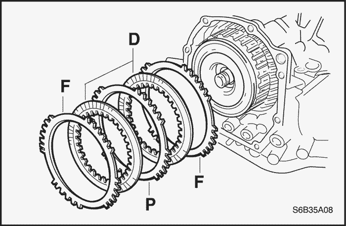

- Desmonte el conjunto de la caja de cambios del vehículo. Consulte el apartado "Conjunto de la caja de cambios" de esta sección.
- Instale el conjunto de transeje al soporte del transeje utilizando el Dispositivo de servicio del transeje automático DW260-021-02 (81-40 LE).


- Quite la tuerca y la arandela y desmonte la palanca de mando.
- Use un destornillador para desprender la arandela de bloqueo.
- Quite los dos tornillos y la tuerca y extraiga el interruptor de TR.

- Quite las dos uniones de la carcasa de la caja de cambios.
- Retire las juntas tóricas de las uniones.

- Quite el tapón roscado de la carcasa de la caja de cambios.
- Retire la junta tórica del tapón roscado.

- Quite el tornillo y desmonte el sensor de velocidad del eje primario (ISS).
- Quite el tapón del respiradero.
- Retire la junta tórica del tapón del respiradero.

- Quite el tornillo y desmonte el sensor de velocidad del eje secundario (OSS).

- Quite los 18 tornillos.
- Desmonte la junta y el cárter del aceite.
- Quite el tapón de drenaje del cárter del aceite.

- Quite los tres tornillos y la malla filtrante del aceite.

- Retire la junta de la malla filtrante del aceite.

- Quite el tornillo y desmonte el sensor de temperatura del aceite de transmisión con la abrazadera.
- Desenchufe los conectores de los 5 solenoides.
-
- a. Solenoide de control de bloqueo.
- b. Solenoide de control de presión.
- c. Solenoide de cambio nº 2.
- d. Solenoide de cambio nº 1.
- e. Solenoide de sincronización

- Sujete el conjunto de la caja de válvulas y quite los 14 tornillos.

- Desconecte de la palanca de la válvula manual la varilla de mando de dicha válvula y desmonte el conjunto de la caja de válvulas.

- Desmonte la válvula de retención y el muelle.

- Desmonte la junta del tambor de freno.

- Retire la junta de aplicación.

ACTÚE CON PRECAUCIÓN AL DESMONTAR COMPONENTES CON AIRE COMPRIMIDO O PODRÍAN PRODUCIRSE LESIONES PERSONALES.
Aviso: Si se aplica aire puede saltar el pistón. Cuando vaya a desmontar el pistón, sujételo con la mano y un trapo viejo.
Aviso: Tenga cuidado de que no salpique aceite de la caja de cambios automática (ATF) cuando sople con aire.
- Aplique 392 kPa (57 lbs/pulg2) de aire comprimido en el taladro de engrase y desmonte el pistón del acumulador del embrague de directa (C2) y el muelle.
- Desmonte el muelle.

- Desmonte las dos juntas tóricas del pistón del acumulador del embrague de directa (C2).

ACTÚE CON PRECAUCIÓN AL DESMONTAR COMPONENTES CON AIRE COMPRIMIDO O PODRÍAN PRODUCIRSE LESIONES PERSONALES.
Aviso: Si se aplica aire puede saltar el pistón. Cuando vaya a desmontar el pistón, sujételo con la mano y un trapo viejo.
Aviso: Tenga cuidado de que no salpique aceite de la caja de cambios automática cuando sople con aire.
- Aplique 392 kPa (57 lbs/pulg2) de aire comprimido en el taladro de engrase y desmonte el pistón del acumulador del embrague de avance (C1) y el muelle.
- Desmonte el muelle.

- Desmonte las dos juntas tóricas del pistón del acumulador del embrague de avance (C1).

ACTÚE CON PRECAUCIÓN AL DESMONTAR COMPONENTES CON AIRE COMPRIMIDO O PODRÍAN PRODUCIRSE LESIONES PERSONALES.
Aviso: Si se aplica aire puede saltar el pistón. Cuando vaya a desmontar el pistón, sujételo con la mano y un trapo viejo.
Aviso: Tenga cuidado de que no salpique aceite de la caja de cambios automática cuando sople con aire.
- Aplique 392 kPa (57 lbs/pulg2) de aire comprimido en el taladro de engrase y desmonte el pistón del acumulador del embrague de superdirecta y 2ª (B1) y el muelle.

- Desmonte las dos juntas tóricas del pistón del acumulador del embrague de superdirecta y 2ª (B1).

- Quite el tornillo y retire el cable de la caja de cambios de la carcasa de ésta.

- Retire la junta tórica del cable de la caja de cambios.

- Quite los 16 tornillos y golpee ligeramente en la circunferencia del alojamiento la caja de cambios con un martillo de plástico para desmontar dicho alojamiento de la carcasa de la caja de cambios.
Importante: Tenga cuidado de no dejar caer el conjunto de engranajes del diferencial al desmontar el alojamiento de la caja de cambios.

- Use un comparador para medir el juego axial del eje primario.
- Juego axial: 0,3 - 0,9 mm (0,012-0,035 pulg.)

- Quite los 6 tornillos y desmonte la bomba del aceite.

- Desmonte el conjunto de engranajes del diferencial de la carcasa de la caja de cambios.

- Retire la junta de aplicación.

- Desmonte el conjunto del embrague de directa (C2) de la carcasa de la caja de cambios.

- Desmonte el cojinete de agujas de empuje del conjunto del embrague de directa.

- Desmonte de la carcasa de la caja de cambios el cubo del embrague de directa (C2), el cojinete de agujas de empuje y la pista del cojinete de empuje.

- Desmonte de la carcasa de la caja de cambios el conjunto del engranaje conducido de la transmisión intermedia.

- Quite los 9 tornillos y golpee ligeramente con un martillo de plástico en la circunferencia de la tapa trasera de la caja de cambios para desmontar dicha tapa de la carcasa de la caja de cambios.

- Retire las 4 juntas de aplicación.

- Desmonte de la carcasa de la caja de cambios las bridas del freno de superdirecta e inercia de 2ª (B1), los discos y el plato.

- Desmonte el cojinete de agujas de empuje y el conjunto del embrague de avance y marcha atrás.

- Desmonte el cojinete de agujas de empuje y la pista del cojinete de empuje del conjunto del embrague de avance y marcha atrás.

- Desmonte el cubo del embrague de avance de la carcasa de la caja de cambios.

- Desmonte del cubo del embrague de avance la pista del cojinete de empuje y el cojinete de agujas de empuje.

- Desmonte el conjunto del embrague unidireccional y el engranaje planetario central trasero.

- Desmonte la pista del cojinete de empuje del conjunto del embrague unidireccional y del engranaje planetario central trasero.

- Quite la arandela de empuje del portasatélites y el cojinete de agujas de empuje del conjunto del embrague unidireccional y el engranaje planetario central trasero.

- Desmonte del engranaje planetario central trasero la arandela de empuje y el conjunto del embrague unidireccional.

- Desmonte el engranaje planetario central delantero de la carcasa de la caja de cambios.
- Desmonte la pista del cojinete de empuje del engranaje planetario central delantero.

ACTÚE CON PRECAUCIÓN AL DESMONTAR LOS ANILLOS ELÁSTICOS DE RETENCIÓN O PODRÍAN PRODUCIRSE LESIONES PERSONALES.
Aviso: Cuando el freno de 2ª haya bajado 1-2 mm (0,039-0,078 pulg.) desde la ranura del anillo elástico de retención, deje de presionar para no deformar dicho freno.
- Use la tuerca/tornillo del compresor de muelles de freno DW240-060-01 y el adaptador del freno de 2ª DW240-080 para quitar los 2 anillos elásticos de retención, el pistón del freno de 2ª y el muelle de retorno de dicho pistón.

ACTÚE CON PRECAUCIÓN AL DESMONTAR COMPONENTES CON AIRE COMPRIMIDO O PODRÍAN PRODUCIRSE LESIONES PERSONALES.
Aviso: Si se aplica aire puede saltar el pistón. Cuando vaya a desmontar el pistón, sujételo con la mano y un trapo viejo.
Aviso: Tenga cuidado de que no salpique aceite de la caja de cambios automática cuando sople con aire.
- Aplique 392 kPa (57 lbs/pulg2) de aire comprimido al freno de 2ª para desmontar su pistón del cilindro de embrague del freno de 2ª.

- Quite las 2 juntas tóricas del pistón del freno de 2ª.

- Desmonte los 2 platos, los 2 discos y la brida.

- Desmonte el embrague unidireccional nº 2 y el engranaje planetario de la carcasa de la caja de cambios.

- Desmonte el embrague unidireccional nº 2 del engranaje planetario y retire el clip antivibración.

- Fije el engranaje conductor de la transmisión intermedia con el trinquete de bloqueo de estacionamiento.

- Desmonte la tuerca de la corona del planetario con la ayuda del soporte DW 260-041.
Aviso: Quite la tuerca sin desprender la corona del planetario. Si se emplea un cincel u otra herramienta para desprender la corona del planetario, tenga en cuenta que cualquier golpe podría dañar el cojinete.

- Quite los 2 tornillos y desmonte el soporte del trinquete de bloqueo de estacionamiento.

- Desmonte el eje del trinquete de bloqueo de estacionamiento, el muelle de torsión y el trinquete de bloqueo de estacionamiento.

- Quite el tornillo y el muelle de retención manual.

- Use un cincel y un martillo para desprender y desmontar el espaciador.

- Use un punzón botador y un martillo para sacar el pasador.

- Desmonte el eje de la palanca de la válvula manual y dicha palanca.

- Desmonte de la palanca de la válvula manual la varilla de bloqueo de estacionamiento.

- Use un destornillador para desmontar el retén de aceite.

- Desmonte la corona del planetario con la ayuda de la tuerca/tornillo del compresor de muelles de freno DW240-060-01, el adaptador del freno de 1ª y marcha atrás DW240-070 y el extractor de coronas de planetarios DW240-090.

- Coloque los 3 tornillos en el engranaje conductor de la transmisión intermedia.
- Tornillo (M6): L= 40-80 mm, Paso de rosca = 1,0 mm
- Gire los 3 tornillos para desmontar el engranaje conductor de la transmisión intermedia y la corona del planetario.

ACTÚE CON PRECAUCIÓN AL DESMONTAR LOS ANILLOS ELÁSTICOS DE RETENCIÓN O PODRÍAN PRODUCIRSE LESIONES PERSONALES.
- Desmonte el anillo elástico de retención del freno de 1ª y marcha atrás con la ayuda de la tuerca/tornillo del compresor de muelles de freno DW240-060-01 y el adaptador del freno de 1ª y marcha atrás DW240-070.

- Desmonte la brida, los 4 discos, los 4 platos el muelle de retorno.

ACTÚE CON PRECAUCIÓN AL DESMONTAR COMPONENTES CON AIRE COMPRIMIDO O PODRÍAN PRODUCIRSE LESIONES PERSONALES.
Aviso: Si se aplica aire puede saltar el pistón. Cuando vaya a desmontar el pistón, sujételo con la mano y un trapo viejo.
Aviso: Tenga cuidado de que no salpique aceite de la caja de cambios automática cuando sople con aire.
- Aplique 392 kPa (57 lbs/pulg2) de aire comprimido a la carcasa de la caja de cambios para desmontar el pistón del freno de 1ª y marcha atrás.

- Quite las 2 juntas tóricas del pistón del freno de 1ª y marcha atrás.

- Quite el tornillo y desmonte el plato nº 1 de la carcasa de la caja de cambios.

- Con un extractor adecuado, desmonte de la carcasa de la caja de cambios la pista exterior del cojinete de rodillos cónicos del engranaje conducido de la transmisión intermedia y el suplemento.
- Use un destornillador para desmontar el retén de aceite de la carcasa de la caja de cambios.
Aviso: Tenga cuidado de no dañar la carcasa de la caja de cambios al desmontar el retén de aceite con el destornillador.

- Desmonte la pista exterior del cojinete lateral y el suplemento de la carcasa de la caja de cambios con el adaptador de la pista exterior del cojinete lateral DW240-150 y el mango del adaptador DW240-170.

- Quite los 3 tornillos y la placa de bloqueo del depósito de aceite del alojamiento de caja de cambios.

- Quite el tornillo y desmonte del alojamiento de la caja de cambios la abrazadera del tubo de aplicación nº 1 de la caja de cambios.
- Desmonte del alojamiento de la caja de cambios el tubo de aplicación de lubricante de la caja de cambios y el tubo de aplicación de lubricante del engranaje diferencial.

- Con un extractor adecuado, desmonte del alojamiento de la caja de cambios la pista exterior del cojinete de rodillos cónicos del engranaje conducido de la transmisión intermedia.
- Use un destornillador para desmontar el retén de aceite del alojamiento de la caja de cambios.
Aviso: Tenga cuidado de no dañar el alojamiento de la caja de cambios al desmontar el retén de aceite con el destornillador.

- Con un extractor adecuado, desmonte la pista exterior del cojinete lateral del alojamiento de la caja de cambios.

ACTÚE CON PRECAUCIÓN AL DESMONTAR LOS ANILLOS ELÁSTICOS DE RETENCIÓN O PODRÍAN PRODUCIRSE LESIONES PERSONALES.
Aviso: Cuando el freno de superdirecta (O/D) haya bajado 1-2 mm (0,039-0,078 pulg.) desde la ranura del anillo elástico de retención, deje de presionar para no deformar dicho freno.
- Desmonte el anillo elástico de retención con la ayuda del compresor de muelles de embrague/freno DW240-020 y el adaptador del freno de superdirecta DW240-050.

- Desmonte el muelle de retorno del freno de superdirecta.

ACTÚE CON PRECAUCIÓN AL DESMONTAR COMPONENTES CON AIRE COMPRIMIDO O PODRÍAN PRODUCIRSE LESIONES PERSONALES.
Aviso: Si se aplica aire puede saltar el pistón. Cuando vaya a desmontar el pistón, sujételo con la mano y un trapo viejo.
Aviso: Tenga cuidado de que no salpique aceite de la caja de cambios automática cuando sople con aire.
- Aplique 392 kPa (57 lbs/pulg2) de aire comprimido a la tapa trasera de la caja de cambios para desmontar el pistón del freno de superdirecta.

- Quite las 2 juntas tóricas del pistón del freno de superdirecta.

- Quite las 2 arandelas de junta de la tapa trasera de la caja de cambios.
Aviso: No expanda en exceso las arandelas de junta.

- Quite los 4 tapones roscados y las 4 juntas tóricas de la tapa trasera de la caja de cambios.
Compresor de muelles de embrague/freno DW240-020
Adaptador del freno de superdirecta DW240-050
Tuerca/tornillo del compresor de muelles de freno DW240-060-01
Plato del compresor de muelles de freno DW240-060-02
Adaptador del freno de 1ª y marcha atrás DW240-070
Adaptador para montar el engranaje conductor de la transmisión intermedia DW240-100
Adaptador de precarga del diferencial DW240-130
Instalador de retenes de aceite del alojamiento de la caja de cambios DW260-031-01
Instalador de retenes de aceite de la carcasa de la caja de cambios DW260-031-02
Soporte para colocar/quitar tuercas de coronas de planetarios DW260-041
Adaptador de pista exterior de cojinete de rodillos cónicos de la carcasa de la caja de cambios DW240-160
Adaptador de la pista exterior del cojinete lateral del alojamiento de la caja de cambios DW240-140
Mango del adaptador DW240-170
- Coloque las 4 juntas tóricas nuevas en los 4 tapones roscados.
- Coloque los 4 tapones roscados con las juntas tóricas en la tapa trasera de la caja de cambios.
Apretar
Apriete los tapones roscados hasta 7,4 N•m (65 lb-pulg.).
- Coloque las 2 arandelas de junta en la tapa trasera de la caja de cambios.

- Use unos pies de rey para medir la longitud en reposo (longitud libre) del muelle de retorno del pistón del freno de superdirecta junto con el asiento del muelle.
- Longitud libre estándar: 18,99 mm (0,7476 pulg.)
- Recubra las 2 juntas tóricas nuevas con aceite de la caja de cambios automática y colóquelas en el pistón del freno de superdirecta.

- Recubra el pistón del freno de superdirecta con aceite de la caja de cambios automática y móntelo en la tapa trasera de caja de cambios.
Aviso: Tenga cuidado de no dañar las juntas tóricas ni el pistón del freno de superdirecta.
- Use el compresor de muelles de embrague/freno DW240-020, el adaptador del freno de superdirecta DW240-050 y un destornillador para montar el muelle de retorno del freno de superdirecta y el anillo elástico de retención en la tapa trasera de la caja de cambios.
Aviso: Cuando el freno de superdirecta (O/D) haya bajado 1-2 mm (0,039-0,078 pulg.) desde la ranura del anillo elástico de retención, deje de presionar para no deformar dicho freno.

- Monte una pista exterior nueva para el cojinete lateral en el alojamiento de la caja de cambios con el adaptador de pista exterior de cojinete lateral DW240-140 y el mango del adaptador DW240-170.

- Use el instalador de retenes de aceite del alojamiento de la caja de cambios DW260-031-01 y un martillo para colocar un retén de aceite nuevo.
- Profundidad del retén de aceite: 3,1 mm (0,122 pulg.)
- Monte una pista exterior de cojinete de rodillos cónicos nueva en el alojamiento de la caja de cambios.
Aviso: Ajuste a presión la pista exterior de cojinete de rodillos cónicos hasta que haga contacto con el alojamiento de la caja de cambios.
- Monte el tubo de aplicación de lubricante de la caja de cambios y el tubo de aplicación de lubricante del engranaje diferencial en el alojamiento de la caja de cambios.
- Coloque la abrazadera del tubo de aplicación nº 1 en el alojamiento de la caja de cambios con su tornillo.
Apretar
Apriete el tornillo hasta 5,4 N•m (48 lb-pulg.).
- Monte la placa de bloqueo del depósito del aceite en el alojamiento de la caja de cambios con sus 3 tornillos.
Apretar
Apriete los tornillos hasta 5,4 N•m (48 lb-pulg.).
- Monte el suplemento en la carcasa de la caja de cambios.
Aviso: Coloque primero un suplemento del mismo espesor que antes.
- Monte una pista exterior de cojinete nueva en la carcasa de la caja de cambios.

- Use el instalador de retenes de aceite de la carcasa de la caja de cambios DW260-031-02 y un martillo para colocar un retén de aceite nuevo.
- Profundidad del retén de aceite: 4,3 mm (0,169 pulg.)

- Monte el suplemento en la carcasa de la caja de cambios.
Aviso: Coloque primero un suplemento del mismo espesor que antes.
- Coloque a presión una nueva pista exterior de cojinete de rodillos cónicos en la carcasa de la caja de cambios con la ayuda del adaptador de pista DW240-160 y el mango del adaptador DW240-170.
Aviso: Ajuste el suplemento a presión hasta que haga contacto con la carcasa de la caja de cambios.

- Coloque en la carcasa de la caja de cambios el plato nº 1 y su tornillo.
Apretar
Apriete el tornillo hasta 9,8 N•m (87 lb-pulg.).

- Monte el engranaje diferencial en la carcasa de la caja de cambios.

- Monte el alojamiento de la caja de cambios y apriete provisionalmente sus 16 tornillos.
- De los 16 tornillos del alojamiento de la caja de cambios, apriete del todo 8 ó 9 tornillos.
Apretar
Apriete el tornillo hasta 29 N•m (22 lb-pie).

- Use el adaptador de precarga del diferencial DW240-130 para girar el conjunto del engranaje diferencial a derecha e izquierda 2 ó 3 veces para que el cojinete se asiente.

- Use el adaptador de precarga del diferencial DW240-130 y una llave dinamométrica pequeña para medir la precarga del engranaje diferencial.
Aviso: Anote el valor medido.

- Desmonte el alojamiento de la caja de cambios y monte el engranaje conducido de la transmisión intermedia.
- Monte el alojamiento de la caja de cambios y apriete provisionalmente sus 16 tornillos.
- Apriete los tornillos del alojamiento de la caja de cambios igual que en el paso 22.
Apretar
Apriete los tornillos hasta 29 N•m (22 lb-pulg.).
- Use el adaptador de precarga del diferencial DW240-130 para girar el conjunto del engranaje diferencial a derecha e izquierda 2 ó 3 veces para que el cojinete se asiente.
- Use el adaptador de precarga del diferencial DW240-130 y una llave dinamométrica pequeña para medir la precarga del engranaje diferencial. Reste a este valor el valor medido en el paso 23. Esta es la precarga del engranaje conducido de la transmisión intermedia.
-
- Cojinete nuevo: 0,33-0,76 N•m (3,21-6,77 lb-pulg.)
- Cojinete usado: 0,17-0,38 N•m (1,48-3,39 lb-pulg.)
Si la precarga del engranaje conducido de la transmisión intermedia no cumple las especificaciones, seleccione el suplemento de ajuste de la siguiente tabla y vuelva a medir el valor. Repita el procedimiento hasta que el valor cumpla las especificaciones.
Aviso: Cuando la precarga supere las especificaciones, seleccione un suplemento de ajuste más fino. Cuando la precarga sea inferior a las especificaciones, seleccione un suplemento de ajuste más grueso.
- Espesor del suplemento de ajuste: mm (pulg.)
|
Marca
|
Espesor
|
Marca
|
Espesor
|
|
1
|
1,70 (0,0669)
|
G
|
2,17 (0,0854)
|
|
2
|
1,75 (0,0689)
|
H
|
2,20 (0,0866)
|
|
3
|
1,80 (0,0709)
|
K
|
2,25 (0,0886)
|
|
4
|
1,85 (0,0728)
|
L
|
2,30 (0,0906)
|
|
5
|
1,90 (0,0748)
|
M
|
2,35 (0,0925)
|
|
6
|
1,93 (0,0760)
|
N
|
2,40 (0,0945)
|
|
7
|
1,96 (0,0772)
|
P
|
2,45 (0,0965)
|
|
A
|
1,99 (0,0783)
|
Q
|
2,50 (0,0984)
|
|
B
|
2,02 (0,0795)
|
R
|
2,55 (0,1004)
|
|
C
|
2,05 (0,0807)
|
S
|
2,60 (0,1024)
|
|
D
|
2,08 (0,0819)
|
U
|
2,65 (0,1043)
|
|
E
|
2,11 (0,0831)
|
W
|
2,70(0,1063)
|
|
F
|
2,14 (0,0843)
|
-
|
-
|

- Use unos pies de rey para medir la longitud libre del muelle de retorno del pistón del freno de 1ª y marcha atrás junto con el asiento del muelle.
- Longitud libre estándar: 18,053 mm (0,71075 pulg.)

- Compruebe si la superficie de deslizamiento del disco, del plato y de la brida del freno de 1ª y marcha atrás está desgastada o quemada. Si fuera necesario, sustitúyalos.
Aviso: Si el forro del disco se está levantando o está descolorido, o si hay alguna parte de la ranura deformada, sustituya todos los discos.
Aviso: Antes de montar nuevos discos, sumérjalos en aceite de caja de cambios al menos durante 15 minutos.
- Recubra las 2 juntas tóricas nuevas con aceite de la caja de cambios automática y colóquelas en el pistón del freno de 1ª y marcha atrás.

- Monte el pistón del freno de 1ª y marcha atrás en la carcasa de la caja de cambios.
Aviso: Tenga cuidado de no dañar las juntas tóricas ni el pistón del freno de 1ª y marcha atrás.

- Monte el muelle de retorno en la carcasa de la caja de cambios.

- Monte los 4 platos, los 4 discos y la brida.
- Móntelos en el siguiente orden: P D P D P D P D B
-
- (P = Plato, D = Disco, B = Brida)
- Monte el anillo elástico de retención con el adaptador del freno de 1ª y marcha atrás DW240-070 y la tuerca/tornillo del compresor de muelles de freno DW240-060-01.
Aviso: Asegúrese de que el anillo elástico de retención está bien colocado en la ranura de la carcasa de la caja de cambios.

- Mida con un comparador la carrera del pistón del freno de 1ª y marcha atrás al tiempo que aplica y deja de aplicar 392-785 kPa (57-114 lbs/pulg2) de aire comprimido.
Aviso: Si el valor de la carrera del pistón no es el estándar, revise los discos, los platos y la brida. Carrera del pistón: 0,6 - 1,3 mm (0,024 - 0,051 pulg.)

- Monte el engranaje conductor de la transmisión intermedia con la ayuda de un adaptador para montar el engranaje conductor DW240-100, la tuerca/tornillo del compresor de muelles de freno DW240-060-01 y el plato del compresor de muelles de freno DW240-060-02.
- Monte el engranaje conductor de la transmisión intermedia con la ayuda de un adaptador para montar el engranaje conductor DW240-100, la tuerca/tornillo del compresor de muelles de freno DW240-060-01 y el plato del compresor de muelles de freno DW240-060-02.
Aviso: Tenga cuidado de no ejercer demasiada fuerza sobre la carcasa de la caja de cambios.

- Recubra el nuevo retén con aceite de la caja de cambios.
- Recubra el nuevo retén con aceite de la caja de cambios.
- Monte el retén de aceite en la carcasa de la caja de cambios.
- Monte el retén de aceite en la carcasa de la caja de cambios.
- Profundidad del retén de aceite:
-
- A: 1 ± 0,25 mm (0,39 ± 0,0098 pulg.)
- Monte la varilla de bloqueo de estacionamiento en la palanca de la válvula manual.
- Monte la varilla de bloqueo de estacionamiento en la palanca de la válvula manual.

- Coloque un espaciador nuevo en la palanca de la válvula manual.
- Coloque un espaciador nuevo en la palanca de la válvula manual.

- Monte el eje de la palanca de la válvula manual y la propia palanca.
- Monte el eje de la palanca de la válvula manual y la propia palanca.
- Use un punzón botador y un martillo para introducir un pasador nuevo.

- Gire el espaciador y el eje de la palanca para alinear el orificio pequeño de posición de colocación del espaciador con la marca de posición del eje de la palanca.
- Gire el espaciador y el eje de la palanca para alinear el orificio pequeño de posición de colocación del espaciador con la marca de posición del eje de la palanca.
- Coloque el espaciador por el orificio pequeño con la ayuda de un punzón botador.
- Coloque el espaciador por el orificio pequeño con la ayuda de un punzón botador.
- Compruebe que el espaciador no gira.
- Coloque el muelle de retención manual con el tornillo.
Apretar
Apriete los tornillos hasta 9,8 N•m (87 lb-pulg.).
- Monte el eje del trinquete de bloqueo de estacionamiento, el muelle de torsión y el trinquete de bloqueo de estacionamiento.

Aviso: Compruebe que el borde del muelle de torsión encaja en la ranura de forma segura.
- Monte el soporte del trinquete de bloqueo de estacionamiento con sus 2 tornillos.
Apretar
Apriete los tornillos hasta 7,4 N•m (65 lb-pulg.).

- Monte la corona del planetario con la ayuda del adaptador para montar el engranaje conductor de la transmisión intermedia DW240-100 y la tuerca/tornillo del compresor de muelles de freno DW240-060-01.
- Antes de montar la corona del planetario, sustituya la brida de la corona por otra nueva.
- Fije el engranaje conductor de la transmisión intermedia con el trinquete de bloqueo de estacionamiento.
- Coloque una tuerca nueva con el soporte para colocar/quitar tuercas de coronas de planetarios DW260-041.
Apretar
Apriete la tuerca hasta 9,8 N•m (87 lb-pulg.).

- Use una llave dinamométrica para girar el engranaje conductor de la transmisión intermedia 100 vueltas por minuto y mida la precarga.
Aviso: Cuando la precarga sea inferior a la de las especificaciones, apriete más la tuerca y ajuste la precarga. Precarga: 0,05-0,35 N•m (0,43-3,12 lb-pulg.)
Apretar
Apriete la tuerca hasta 29 N•m (22 lb-pie) o menos.
- Coloque la tuerca.

- Monte el engranaje planetario en la carcasa de la caja de cambios.

- Recubra la arandela de empuje del portasatélites con vaselina y colóquela en el engranaje planetario.

- Monte el embrague unidireccional nº 2 en la carcasa de la caja de cambios.

- Compruebe que el engranaje planetario gira libremente en sentido contrario a las agujas del reloj y se bloquea en el sentido de las agujas del reloj.

- Coloque el clip antivibración en el sitio indicado en la ilustración (el espacio entre la pista exterior del embrague unidireccional nº 2 y la carcasa de la caja de cambios), empuje este clip hasta que se oiga un chasquido.
- Coloque el clip antivibración en el sitio indicado en la ilustración (el espacio entre la pista exterior del embrague unidireccional nº 2 y la carcasa de la caja de cambios), empuje este clip hasta que se oiga un chasquido.

- Use unos pies de rey para medir la longitud libre del muelle de retorno del pistón del freno de 2ª junto con el asiento del muelle.
- Longitud libre estándar: 15,85 mm (0,6240 pulg.).

- Compruebe si la superficie de deslizamiento del disco, del plato y de la brida del freno de 2ª está desgastada o quemada. Si fuera necesario, sustitúyalos.
Aviso: Si el forro del disco se está levantando o está descolorido, o si hay alguna parte de la ranura deformada, sustituya todos los discos.
Aviso: Antes de montar nuevos discos, sumérjalos en aceite de caja de cambios al menos durante 15 minutos.

- Monte la brida, los 2 discos y los 2 platos.
- Móntelos en el siguiente orden: B D P D P
-
- (D = Disco, P = Plato, B = Brida)
- Monte el muelle de retorno del freno de 2ª.
- Monte el muelle de retorno del freno de 2ª.
Aviso: Asegúrese de que el anillo elástico de retención está bien colocado en la ranura de la carcasa de la caja de cambios.
- Recubra las 2 juntas tóricas nuevas con aceite de la caja de cambios automática y colóquelas en el pistón del freno de 2ª.

- Monte el pistón del freno de 2ª en el cilindro de embrague del freno de 2ª.
Aviso: Tenga cuidado de no dañar las juntas tóricas.

- Monte el cilindro de embrague del freno de 2ª en la carcasa de la caja de cambios.
- Use la tuerca/tornillo del compresor de muelles de freno DW240-060-01 y el adaptador del freno de 2ª DW240-080 para comprimir el muelle de retorno del pistón del freno de 2ª.
- Coloque el anillo elástico de retención con un destornillador.
- Coloque el anillo elástico de retención con un destornillador.
Aviso: Asegúrese de que el anillo elástico de retención está bien colocado en la ranura de la carcasa de la caja de cambios.

- Recubra la pista del cojinete de empuje con vaselina y colóquela en el engranaje planetario central delantero.
-
- Diámetro interior: 19,3 mm (0,760 pulg.)
- Diámetro exterior: 29,0 mm (1,142 pulg.)
- Monte el engranaje planetario central delantero en la carcasa de la caja de cambios.
- Monte la arandela de empuje y el conjunto del embrague unidireccional en el engranaje planetario central trasero.

- Recubra la pista del cojinete de empuje con vaselina y colóquela en el engranaje planetario central trasero y el conjunto del embrague unidireccional.
-
- Diámetro interior: 42,5 mm (1,673 pulg.)
- Diámetro exterior: 57,5 mm (2,264 pulg.)
Aviso: Compruebe la dirección del cojinete.
- Monte el engranaje planetario central trasero y el conjunto del embrague unidireccional en la carcasa de la caja de cambios.

- Recubra la pista del cojinete de empuje con vaselina y colóquela en la carcasa de la caja de cambios.
- Recubra la pista del cojinete de empuje con vaselina y colóquela en la carcasa de la caja de cambios.
-
- Diámetro interior: 34,95 mm (1,3760 pulg.)
- Diámetro exterior: 45,50 mm (1,7913 pulg.)
Aviso: Compruebe la dirección de la pista.

- Recubra el cojinete de agujas de empuje con vaselina y colóquelo en el cubo del embrague de avance.
-
- Diámetro interior: 33,3 mm (1,311 pulg.)
- Diámetro exterior: 46,5 mm (1,831 pulg.)
Aviso: Compruebe la dirección del cojinete.
- Monte el cubo del embrague de avance en la carcasa de la caja de cambios.

- Recubra la pista del cojinete de empuje con vaselina y colóquela en el cubo del embrague de avance.
-
- Diámetro interior: 19,3 mm (1,760 pulg.)
- Diámetro exterior: 30,6 mm (1,205 pulg.)
- Monte la pista del cojinete de empuje y el cojinete de agujas de empuje en el conjunto del embrague de avance y marcha atrás.
- Diámetro de la pista y el cojinete: mm (pulg.)
|
.
|
Diámetro interior
|
Diámetro exterior
|
|
rodadura, pista
|
18,1 (0,713)
|
28,2 (1,110)
|
|
Cojinete, rodamiento
|
18,1 (0,713)
|
29,6 (1,165)
|

- Monte el conjunto del embrague de avance y marcha atrás en la carcasa de la caja de cambios.
- Compruebe si la superficie de deslizamiento del disco, del plato y de la brida del freno de superdirecta e inercia de 2ª está desgastada o quemada. Si fuera necesario, sustitúyalos.
Aviso: Si el forro del disco se está levantando o está descolorido, o si hay alguna parte de la marca impresa deformada, sustituya todos los discos.
Aviso: Antes de montar nuevos discos, sumérjalos en aceite de caja de cambios al menos durante 15 minutos.

- Con un destornillador, coloque el anillo elástico de retención en la carcasa de la caja de cambios.
Aviso: Asegúrese de que el anillo elástico de retención está bien colocado en la ranura de la carcasa de la caja de cambios.
- Monte las 2 bridas, los 2 discos y el plato en la carcasa de la caja de cambios.
- Móntelos en el siguiente orden: B D P D - B
-
- (P = Plato, D = Disco, B = Brida)
- Limpie la parte conectada, la carcasa de la caja de cambios y la tapa trasera de la caja de cambios.

- Como muestra la ilustración, coloque la carcasa de la caja de cambios por un borde recto y use unos pies de rey para medir la distancia entre la brida del freno de superdirecta e inercia de 2ª y el borde recto (dimensión A).

- Como muestra la ilustración, coloque el pistón del freno de superdirecta por un borde recto y use unos pies de rey para medir la distancia entre la tapa trasera de la caja de cambios y el borde recto (dimensión B)
- Calcule el valor de la carrera del pistón con la ayuda de la siguiente fórmula. Seleccione una brida que cumpla el valor de la carrera del pistón y móntela.
-
- Carrera del pistón = Dimensión A Dimensión B
- Carrera del pistón: 0,65 - 1,05 mm (0,0256 - 0,0413 pulg.)
- Espesor de la brida: mm (pulg.)
|
Espesor
|
Marca
|
|
1,8 (0,071)
|
1
|
|
2,0 (0,079)
|
2
|
|
2,2 (0,087)
|
3
|
|
2,4 (0,094)
|
4
|
|
2,6 (0,102)
|
5
|
- Coloque las 4 juntas de aplicación nuevas en la tapa trasera de la caja de cambios.

- Recubra el cojinete de agujas de empuje con vaselina y móntelo en el conjunto del embrague de avance y marcha atrás.
-
- Diámetro interior: 43,2 mm (1,701 pulg.)
- Diámetro exterior: 62,0 mm (2,441 pulg.)
- Retire cualquier material de junta y tenga cuidado de que no caiga aceite en las superficies de contacto de la caja de cambios o de su tapa trasera.

- Coloque una junta conformada in situ (FIPG) en la tapa trasera de la caja de cambios.
-
- FIPG: Three Bond 1281 o equivalente.
- Anchura de sellado: 1,2 mm (0,047 pulg.)

- Monte la tapa trasera de la caja de cambios en la carcasa de la caja de cambios con sus 9 tornillos.
Apretar
Apriete los tornillos hasta 25 N•m (18 lb-pie).
- Monte el conjunto del engranaje conducido de la transmisión intermedia en la carcasa de la caja de cambios.
- Monte el conjunto del engranaje diferencial en la carcasa de la caja de cambios.

- Monte el cubo del embrague de directa en la carcasa de la caja de cambios.

- Monte la pista del cojinete de empuje y el cojinete de agujas de empuje en la carcasa de la caja de cambios.
- Pista y cojinete: mm (pulg.)
|
.
|
Diámetro interior
|
Diámetro exterior
|
|
rodadura, pista
|
20,5 (0,807)
|
32,6 (1,283)
|
|
Cojinete, rodamiento
|
17,8 (0,701)
|
30,2 (1,189)
|
- Monte el conjunto del embrague de directa en la carcasa de la caja de cambios.
- Monte el conjunto del embrague de directa en la carcasa de la caja de cambios.
- Monte una junta de aplicación nueva.

- Monte el cojinete de agujas de empuje en la carcasa de la caja de cambios.
Aviso: Compruebe la dirección del cojinete.
- Coloque la bomba de aceite a través del eje primario y alinee los taladros de los tornillos de la misma con la carcasa de la caja de cambios.
- Coloque los 6 tornillos de la bomba de aceite.
Apretar
Apriete los tornillos hasta 25 N•m (18 lb-pie).
- Mida el juego axial en dirección axial.
Aviso: En caso de que no se especificase el juego axial, seleccione y sustituya el cojinete de agujas de empuje.
- Juego axial: 0,3 - 0,9 mm (0,012-0,035 pulg.)
- Cojinete: mm (pulg.)
|
Diámetro interior
|
Diámetro exterior
|
Espesor
|
|
32,5 (1,280)
|
48,5 (1,909)
|
4,21 (0,1657)
|
|
32,9 (1,295)
|
48,5 (1,909)
|
3,62 (0,1425)
|

- Asegúrese de que el eje primario gira sin problemas.

- Retire cualquier material de junta y tenga cuidado de que no caiga aceite en las superficies de contacto del alojamiento o de la carcasa de la caja de cambios.
- Coloque una junta conformada in situ (FIPG) en el alojamiento de la caja de cambios.
-
- FIPG: Three Bond 1281 o equivalente.
- Anchura de sellado: 1,2 mm (0,047 pulg.)

- Monte el alojamiento de la caja de cambios en la carcasa de la caja de cambios con sus 16 tornillos.
Apretar
Apriete los tornillos hasta 29 N•m (22 lb-pie).
- Ponga guarnición de junta o equivalente en los 3 tornillos señalados con flechas.
- Recubra la nueva junta tórica con aceite de la caja de cambios y colóquela en el cable de la caja de cambios.
- Monte el cable de la caja de cambios en la carcasa de la caja de cambios con su tornillo.
Apretar
Apriete los tornillos hasta 5,4 N•m (48 lb-pulg.).

- Recubra las 6 juntas tóricas nuevas con aceite de la caja de cambios automática y colóquelas en los pistones.
- Recubra con aceite de la caja de cambios automática los 3 muelles y los 3 pistones de los acumuladores y móntelos en sus orificios.
|
Muelle
|
Longitud libre
Diámetro exterior mm (pulg.)
|
Color
|
|
B1 (freno de 2ª y superdirecta)
|
47,13(1,8555)/16,0(0,630)
|
Rosa
|
|
C1 (embrague de avance)
|
57,90(2,2795)/17,2(0,677)
|
-
|
|
C2 (embrague de directa)
|
57,20(2,2520)/17,5(0,689)
|
Verde
|
- Recubra la nueva junta de aplicación con aceite de la caja de cambios y colóquela en la carcasa de la caja de cambios.
- Recubra la nueva junta del tambor de freno con aceite de la caja de cambios y colóquela en la carcasa de la caja de cambios.
- Monte el muelle y la válvula de retención.

- Conecte la varilla de mando de la válvula manual a la palanca de la válvula manual como se indica en la ilustración.
- Monte el conjunto de la caja de válvulas en la carcasa de la caja de cambios.
Apretar
Apriete los tornillos hasta 11 N•m (97 lb-pulg.).
Aviso: Cuando monte la caja de válvulas en la carcasa de la caja de cambios, no deje que se incline ninguno de los pistones de los acumuladores B1, C1 y C2. Cuando monte la caja de válvulas en la carcasa de la caja de cambios, no retenga los solenoides.
- Conecte el cableado y el conector del cable de caja de cambios al conjunto de la caja de válvulas.
- Enchufe los 5 conectores.
-
- a. Solenoide de control de bloqueo.
- b. Solenoide de control de presión.
- c. Solenoide de cambio nº 2.
- d. Solenoide de cambio nº 1.
- e. Solenoide de sincronización
- Monte el sensor de TFT con la abrazadera.
Aviso: Asegúrese de que el cable de la caja de cambios no sobresalga de la superficie de montaje del cárter del aceite.
- Coloque una junta nueva en la malla filtrante de aceite.
- Monte la malla filtrante de aceite con sus 3 tornillos en la caja de válvulas.
Apretar
Apriete los tornillos hasta 9,8 N•m (87 lb-pulg.).

- Monte los 2 imanes en el cárter del aceite.
- Coloque una junta nueva en el cárter del aceite y móntelo en la carcasa de la caja de cambios con sus 18 tornillos.
Apretar
Apriete los tornillos hasta 7 N•m (62 lb-pulg.).
- Conecte el sensor de velocidad del eje secundario (OSS).
Apretar
Apriete el tornillo hasta 7,4 N•m (65 lb-pulg.).
- Ponga el tapón del respiradero nº 1.
- Monte el sensor de velocidad del eje primario (ISS) con su tornillo.
Apretar
Apriete los tornillos hasta 5,4 N•m (48 lb-pulg.).
- Recubra la nueva junta tórica con aceite de la caja de cambios y colóquela en el tapón roscado.
- Ponga el tapón roscado en la carcasa de la caja de cambios.
Apretar
Apriete los tornillos hasta 7,4 N•m (65 lb-pulg.).
- Recubra las 2 juntas tóricas nuevas con aceite de la caja de cambios automática y colóquelas en las uniones.
- Monte las 2 uniones en la carcasa de la caja de cambios.
Apretar
Apriete las uniones hasta 25 N•m (18 lb-pie).

- Monte el interruptor de TR en el eje de la palanca de la válvula manual y coloque provisionalmente los 2 tornillos de ajuste.
- Coloque una arandela de bloqueo nueva y las tuercas.
Apretar
Apriete las tuercas hasta 12 N•m (106 lb-pulg.).

- Monte provisionalmente la palanca de mando.

- Gire la palanca en sentido contrario a las agujas del reloj hasta que haga tope, luego gírela en el sentido de las agujas del reloj 2 muescas.
- Desmonte la palanca de mando.

- Alinee la ranura con la línea básica de punto muerto.
- Apriete los 2 tornillos.
Apretar
Apriete los tornillos hasta 5,4 N•m (48 lb-pulg.).

- Use un destornillador para colocar la tuerca con la arandela de bloqueo.

- Monte la palanca de mando, la arandela y la tuerca.
Apretar
Apriete la tuerca hasta 12 N•m (106 lb-pulg.).

- Monte el convertidor de par en la caja de cambios.
- Mida la profundidad de montaje del convertidor de par. Valor estándar: 11,1 mm
-
- Si el valor medido supera el valor estándar, reajuste el convertidor de par hasta que cumpla el valor especificado.